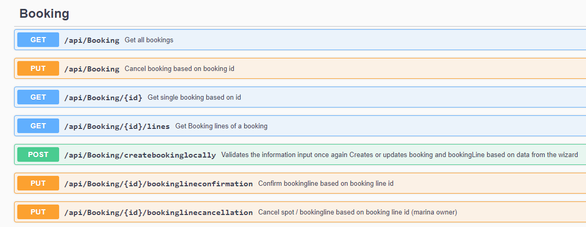
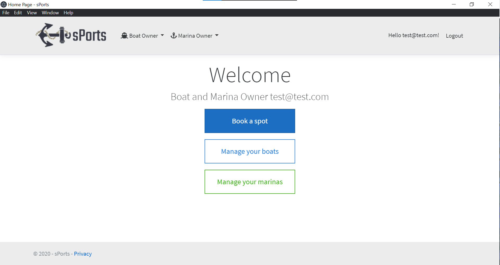
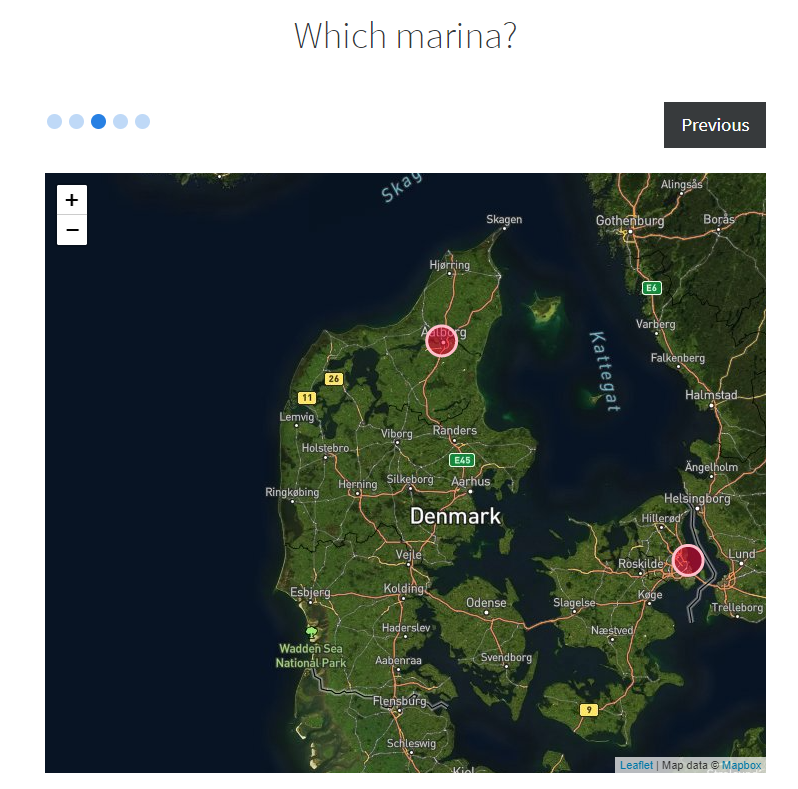
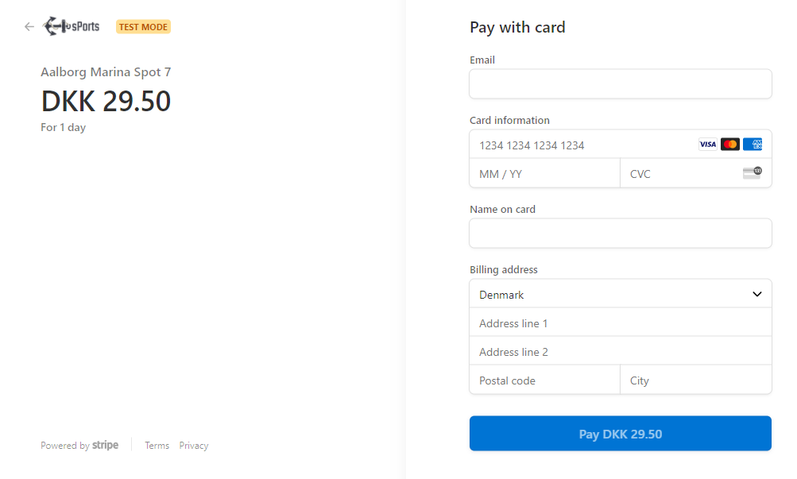

Repository: Github - sPorts Project
Collaborators: Bartosz Urban, Dragos Ionescu, Peter Hahn Boelt, Samuel Ivan, Zaharia Horatau-Hostiuc
In this articles I will talk a little bit about my 3rd semester project at UCN, where as part of a group of student developers, we have completed web client as well as desktop application that manages marinas for marina owners and boats for boat owners where boat owners are also able to book a specific marina with their boat using a map, place multiple orders in a shopping cart and lastly pay for them through payment gateway.
Regarding the technologies, we have used ASP.NET Core framework for this project with Entity Framework code first as our ORM (object relational mapper) for accessing our local version of MSSQL database. xUnit has been utilized as our testing tool mainly due to its easy way of using parameterised tests, hence taking advantage of inline data (writing one test method and supplying it with different data sets to test) and parallelism when running tests which is the default behaviour for xUnit. Our pages were generated using HTML, a little bit of CSS and some JavaScript. Regarding the development process, Scrum combined with XP have been used with Azure DevOps for managing our project.
Swawgger, in form of Swashbuckle NuGet package in Visual Studio, has been applied to document our API, creating a nice overview with examples for our REST API methods.

Electron.NET was discovered as the best option to generate the dedicated client of our system with the least amount of effort. This framework simply converts the web client application written in HTML, CSS and JavaScript to desktop client using Chromium and Node.js.

To be able to create an interactive map for our system Leaflet JS library was employed to solve this task. This open source library let us generate interactive maps, so that we could create marinas and spots in the marinas by clicking on the desired position on a map.

Lastly, for this project we also wanted to simulate the payment process for our users, hence the Stripe.net payment processor and payment gateway was used as a solution to this issue.

To sum it up, I really enjoyed working on this project with my group. It was very exciting to create the whole booking process for boat owners using different range
of technologies in order to make it as real as possible. There are also many more features that has been implemented in the system like authentication and
authorization of our users, creating different user groups (marina owner, boat owner, manager), sending email notifications with overview of
the customer's order in a text and pdf file, creating sessions in order to retain data in our shopping cart while the user is browsing the app, etc.
For better overview, you can also try out our system by downloading the project from the Github repository referenced at the beginning.
Author: Samuel Ivan